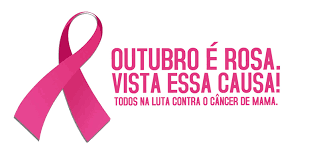

O Outubro Rosa se estabeleceu no Brasil no começo do século XXI, com as primeiras ações no sentido de incentivar a campanha e divulgar informações a respeito do câncer de mama. A primeira iniciativa do tipo se deu em 2002, quando um monumento da cidade de São Paulo foi iluminado com a cor rosa para fortalecer a conscientização sobre a prevenção ao câncer de mama.
A campanha do Outubro Rosa se tornou uma iniciativa regular na sociedade brasileira somente a partir de 2008, quando alguns estados passaram a “celebrar” a campanha e a promover ações de conscientização médica. Debates, campanhas informativas e outras ações também começaram a se fortalecer.
O Outubro Rosa foi oficializado aqui a partir da Lei nº 13.733, de 16 de novembro de 2018. Essa lei federal estabeleceu algumas ações obrigatórias para o mês de outubro, entre elas palestras e iluminação de prédios públicos, monumentos e construções com a cor rosa.
Essa campanha, no entanto, não nasceu no Brasil. As iniciativas relacionadas do Outubro Rosa surgiram nos Estados Unidos, uma vez que uma forte preocupação se estabeleceu nos meios médicos desse país a partir da década de 1980. Essas preocupações levaram a uma série de ações que transformaram o laço rosa em um símbolo da campanha pela prevenção contra o câncer de mama. A instituição responsável por transformar o laço rosa no símbolo da campanha foi a Fundação Susan G. Komen for the Cure.
O crescimento da campanha contra o câncer de mama no mês de outubro cruzou as fronteiras estadunidenses, chegando ao Brasil e a diversos outros países, como Canadá, Austrália, Alemanha, entre outros."
